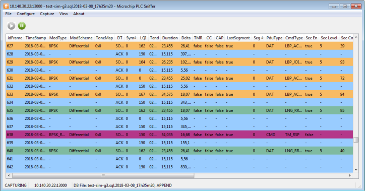

On a G3-PLC network, the main window looks like this:
Figure 1. Capture Window (G3-PLC)

The capture window has a tool bar with two commands: Pause and start, with
the same functionality than PRIME (see Figure 2).
Main window display a table with the current log. It is updated in real
time as frames are received from the hardware sniffer. The data shown is:
- idFrame: index of the frame
- Timestamp: timestamp of the frame. If not provided by the hardware/remote
sniffer device, then it will be added by the PC software
- ModType: modulation type used to transmit this frame
- ModScheme: modulation scheme used to transmit this frame
- DT (Delimiter Type): Parameter from PHY layer defined by G3 standard. It
indicates whether response is expected or not (SOF_RESP / SOF_NO_RESP) as well
as positive or negative acknowledgement (ACK / NACK)
- Symbols: number of OFDM symbols used to transmit this frame
- LQI: As defined in the G3-PLC
standard
- RSSI: Received Signal Strength
Indication, measured by the hardware sniffer in dBµV
- Duration: length of this frame in milliseconds
- Delta: time between the
beginning of this frame and the beginning of the previous frame
- TMR (Tone Map Request): 1-bit
field of G3-PLC MAC header indicating the request of a Tone Map Response
- CC (Contention Control): 1-bit
field of G3-PLC MAC header. When it is 0, the next frame shall be transmitted using
contention access, otherwise the next segment shall be transmitted using the
contention free slot (CFS)
- CAP (Channel Access Priority):
1-bit field of G3-PLC MAC header indicating normal (0) or high (1) priority
- LSF (Last Segment Flag): 1-bit
field of G3-PLC MAC header indicating whether it is the last segment or not
- SegmentCount: Index of segment within a fragmented frame
- PduType: Defined by G3-PLC
standard. Beacon, Data, MAC Command
- CmdType: If the frame is a MAC
Command, it can be Beacon Request or Tone Map Response. If the frame is Data, and the
security information is available, then it will show the type of ADP message,
including LoWPAN Bootstrap and LOADng protocol frames
- SecurityEn: 1-bit field of
G3-PLC MAC header indicating whether the data payload is encrypted by the MAC
sublayer or not
- SecurityLevel: Only present if SecurityEn is set. It indicates the actual
frame protection that is provided
- SecFrameCounter: Defined by
G3-PLC standard. Only present if SecurityEn is set. It is used for the cryptographic
mechanism
- KeyIndx: Defined by G3-PLC
standard. Only present if SecurityEn is set. It identifies the key that is used for
cryptographic protection of outgoing frames
- SeqNumber: Defined by G3-PLC
standard. It specifies the sequence identifier for the frame
- PanIdCompression: 1-bit field
of G3-PLC MAC header specifying whether the MAC frame is to be sent containing only
one of the PAN identifier fields when both source and destination addresses are
present
- DestAddrMode: Destination Addressing Mode. Three possible values (address not
present, 16-bit address or 64-bit address)
- SrcAddrMode: Source Addressing Mode. Same as DestAddrMode for source
address
- DestPAN: Unique PAN identifier of the intended recipient of the frame
- SrcPAN: Unique PAN identifier of the originator of the frame
- DestAddress: Address of the intended recipient of the frame. It can be not
present, 16-bit or 64-bit depending on DestAddrMode
- SrcAddress: Address of the originator of the frame. It can be not present,
16-bit or 64-bit depending on SrcAddrMode
- Length: PDU length in bytes
- Pdu: PDU in hexadecimal format
- HeaderLen: Length of the MAC header in bytes
- PayloadLen: Length of the MAC payload in bytes
- TicksIni/TicksEnd: Internal
counter of the hardware sniffer. This counter is 32-bit, 1 microsecond accurate
clock. It is used by the sniffer hardware to measure time. TicksIni marks the
beginning of the reception of a frame and therefore, TicksEnd shows the end of the
frame. These values are used to compute Duration and Delta of frames
While the PLC traffic is logged into a database, the software tries to
infer the PLC network structure and status as seen by the PAN coordinator. This information
is shown in several docking views:
- Hexa View
- Packet View
- Filter View
- Network View